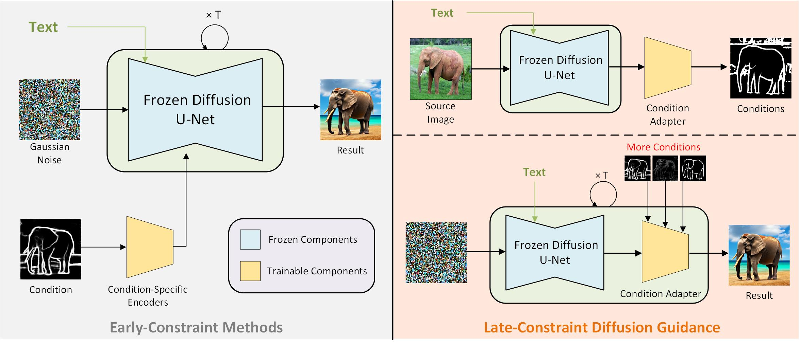

Diffusion models, either with or without text condition, have demonstrated impressive capability in synthesizing photorealistic images given a few or even no words. These models may not fully satisfy user need, as normal users or artists intend to control the synthesized images with specific guidance, like overall layout, color, structure, object shape, and so on. To adapt diffusion models for controllable image synthesis, several methods have been proposed to incorporate the required conditions as regularization upon the intermediate features of the diffusion denoising network. These methods, known as early-constraint ones in this paper, have difficulties in handling multiple conditions with a single solution. They intend to train separate models for each specific condition, which require much training cost and result in non-generalizable solutions. To address these difficulties, we propose a new approach namely late-constraint: we leave the diffusion networks unchanged, but constrain its output to be aligned with the required conditions. Specifically, we train a lightweight condition adapter to establish the correlation between external conditions and internal representations of diffusion models. During the iterative denoising process, the conditional guidance is sent into corresponding condition adapter to manipulate the sampling process with the established correlation. We further equip the introduced late-constraint strategy with a timestep resampling method and an early stopping technique, which boost the quality of synthesized image meanwhile complying with the guidance. Our method outperforms the existing early-constraint methods and generalizes better to unseen condition.
Graphical illustration of existing Early-Constraint solutions and the proposed Late-Constraint Diffusion Guidance.
The proposed late-constraint method requires to train an additional condition adapter to establish the correlation between the internal representations of diffusion models and external controls. The trained adapter is then utilized to control diffusion models by manipulating the sampling process.
We demonstrate the proposed LCDG upon some conditions that mainly provide structural guidance, including edge, color and mask conditions. Note that for each condition, we only need to use one same model for generation. Edge condition consists of different types of edge maps and user sketch. Color condition contains user-prompted color stroke and synthetic image palette. Mask condition consists of casual user scribble and fine-grained segmentation masks, which guides the foreground position and shape separately. Results and comparison are illustrated in the following figures.
More results and comparison of LCDG under Canny edge.
More results and comparison of LCDG under HED edge.
More results and comparison of LCDG under user sketch.
More results and comparison of LCDG under color stroke.
More results and comparison of LCDG under image palette.
More results and comparison of LCDG under segmentation mask and user scribble.
If you find our work is enlightening or the proposed dataset is useful to you, please cite our paper.
@misc{liu2023lateconstraint,
title={Late-Constraint Diffusion Guidance for Controllable Image Synthesis},
author={Chang Liu and Dong Liu},
year={2023},
eprint={2305.11520},
archivePrefix={arXiv},
primaryClass={cs.CV}
}